library("BayesFR")
library("ggplot2")
library("cowplot") # ggplot grids9. Likelihood functions
A statistical model consists of at least 2 parts: a deterministic prediction model, and a stochastic part (distributional model) that connects the observations with the predictions. Together, they define the likelihood function of a statistical model. So far, we assumed the observed number of eaten prey were Poisson distributed (integer, lower bound \(0\)) in case of prey replacement, or Binomial distributed (integer, bounded between \(0\) and \(N_0\)) in experiments without prey replacement.
We have to check if the statistical model is appropriate, i.e. predictions respect boundedness, variation and dispersion (mean-variance scaling) of the data. Posterior predictive checks are performed with the functions pp_check() and conditional_effects(method="posterior_predict"). In case predictions deviate in one or more of these aspects from the data, brms offers many distributions to choose from. Here, we look at 2 examples with possible solutions to (1) overdispersion, and (2) non-integer observations.
Overdispersion
We worked with this data before in the random effects tutorial. Observations show a strong variation, because the experiments were performed with predators of varying body size. We pretend that the dataset does neither include predator ID, nor body size. Fitting this data without these predictors, we estimate population-level attack rates and handling times.
df = df_Schroeder_et_al_2016_OEC
for(i in 1:nrow(df)){ # correct a counting error
df$NE[i] = min(df$NE[i], df$N0[i])
}
ggplot(df, aes(N0,NE)) +
geom_point(alpha=0.2, size=2)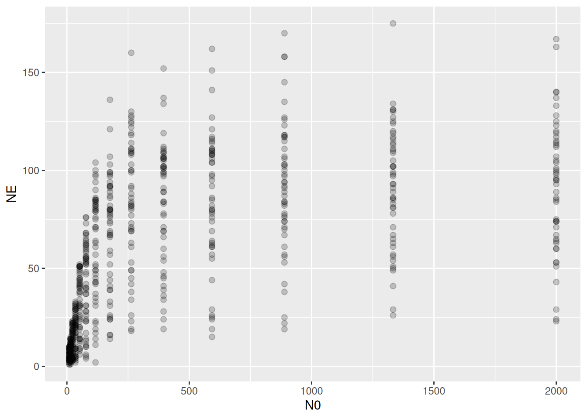
Binomial distribution
In this first, naive approach, we fit a Binomial model as before.
FR.formula = bf( NE | trials(N0) ~ Type2H_dyn(N0,1.0,1.0,a,h)/N0,
a+h ~ 1,
nl = TRUE)
FR.priors = c(prior(exponential(1.0), nlpar="a", lb=0),
prior(exponential(1.0), nlpar="h", lb=0)
)
fit.1 = brm(FR.formula,
family = binomial(link="identity"),
prior = FR.priors,
data = df,
cores = 4,
stanvars = stanvar(scode=Type2H_dyn_code, block="functions")
)
expose_functions(fit.1, vectorize=TRUE)
summary(fit.1) Family: binomial
Links: mu = identity
Formula: NE | trials(N0) ~ Type2H_dyn(N0, 1, 1, a, h)/N0
a ~ 1
h ~ 1
Data: df (Number of observations: 686)
Draws: 4 chains, each with iter = 2000; warmup = 1000; thin = 1;
total post-warmup draws = 4000
Regression Coefficients:
Estimate Est.Error l-95% CI u-95% CI Rhat Bulk_ESS Tail_ESS
a_Intercept 1.30 0.02 1.26 1.33 1.00 1544 2124
h_Intercept 0.01 0.00 0.01 0.01 1.00 2080 1905
Draws were sampled using sampling(NUTS). For each parameter, Bulk_ESS
and Tail_ESS are effective sample size measures, and Rhat is the potential
scale reduction factor on split chains (at convergence, Rhat = 1).Now checking how well this model reproduces the distribution of of observed data:
pp_check(fit.1, ndraws=100)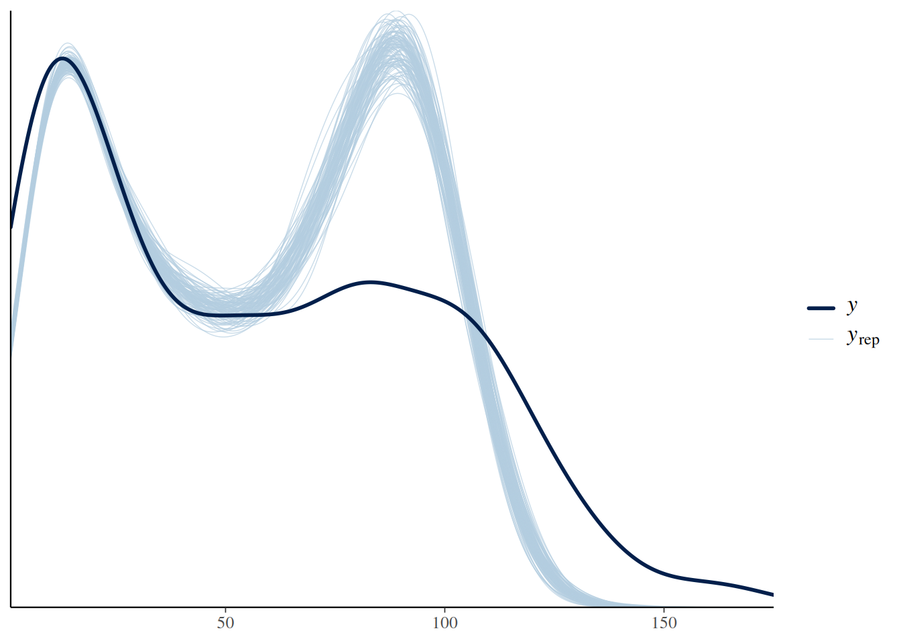
There is a strong mismatch between observed and predicted values, mostly caused by a stronger concentration of predicted values around the maximum feeding rate.
p1 = plot(conditional_effects(fit.1,
int_conditions = data.frame(N0=seq(10,2000,by=10))),
points = TRUE,
point_args = list(alpha=0.2, size=2),
plot = FALSE)
p1 = p1[[1]] + ggtitle("Fitted") + coord_cartesian(ylim=c(0,200))
p2 = plot(conditional_effects(fit.1,
int_conditions = data.frame(N0=seq(10,2000,by=10)),
method = "posterior_predict"),
points = TRUE,
point_args = list(alpha=0.2, size=2),
plot = FALSE)
p2 = p2[[1]] + ggtitle("Predicted")+ coord_cartesian(ylim=c(0,200))
plot_grid(p1, p2, ncol=2)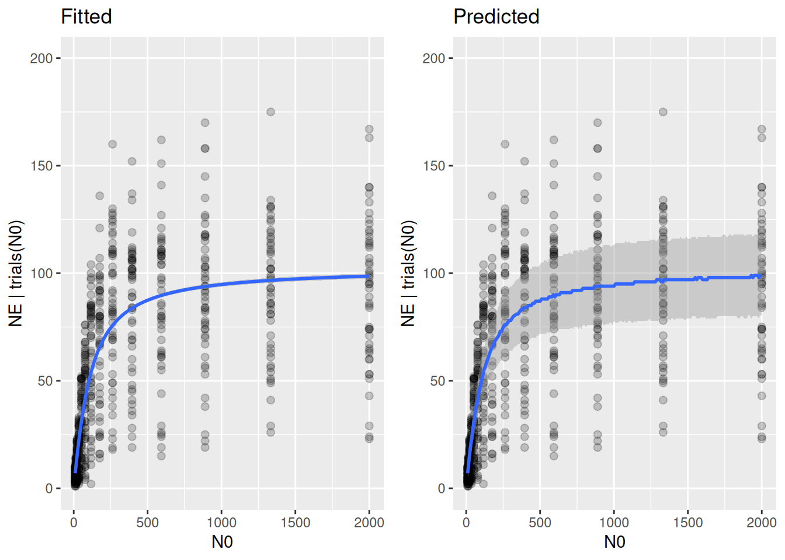
The variation of predicted values is fixed by the Binomial distribution and does not match observed variation.
Beta-Binomial distribution
The Beta-Binomial distribution allows additional variation through a precision parameter phi, which is the inverse of overdispersion. For large phi, the Beta-Binomial is close to a Binomial, for small phi it is overdispersed (larger variance). We replace family=binomial() by family=beta_binomial(), additionally we need to overwrite default link functions with link="identity" and also link_phi="identity". To get the right variance scaling, we let phi scale proportionally with N0 by specifying phi~0+N0 (no intercept) and use a positive prior on the scaling factor. See the appendix below for a detailed explanation.
FR.formula = bf( NE | trials(N0) ~ Type2H_dyn(N0,1.0,1.0,a,h)/N0,
phi ~ 0+N0,
a+h ~ 1,
nl = TRUE)
FR.priors = c(prior(exponential(1.0), nlpar="a", lb=0),
prior(exponential(1.0), nlpar="h", lb=0),
prior(exponential(0.01), dpar="phi", lb=0)
)
fit.2 = brm(FR.formula,
family = beta_binomial(link="identity", link_phi="identity"),
prior = FR.priors,
data = df,
cores = 4,
stanvars = stanvar(scode=Type2H_dyn_code, block="functions")
)
expose_functions(fit.2, vectorize=TRUE)
summary(fit.2) Family: beta_binomial
Links: mu = identity; phi = identity
Formula: NE | trials(N0) ~ Type2H_dyn(N0, 1, 1, a, h)/N0
phi ~ 0 + N0
a ~ 1
h ~ 1
Data: df (Number of observations: 686)
Draws: 4 chains, each with iter = 2000; warmup = 1000; thin = 1;
total post-warmup draws = 4000
Regression Coefficients:
Estimate Est.Error l-95% CI u-95% CI Rhat Bulk_ESS Tail_ESS
a_Intercept 1.16 0.06 1.05 1.27 1.00 2711 2980
h_Intercept 0.01 0.00 0.01 0.01 1.00 2573 3051
phi_N0 0.06 0.00 0.05 0.07 1.00 3317 2992
Draws were sampled using sampling(NUTS). For each parameter, Bulk_ESS
and Tail_ESS are effective sample size measures, and Rhat is the potential
scale reduction factor on split chains (at convergence, Rhat = 1).A small phi (low precision) indicates a strong overdispersion. Also, estimated attack rate is lower than for the Binomial model above and features a much wider credible interval (estimate for the random-effects model in section 6 was also lower with a wide CI [1.02,1.58]).
pp_check(fit.2, ndraws=100)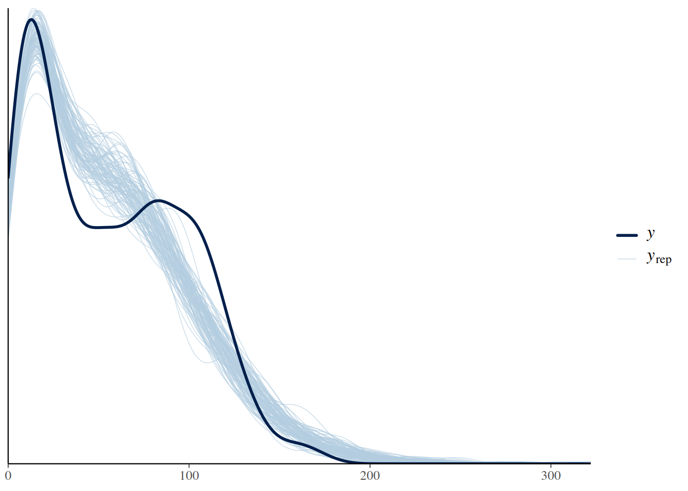
While the comparison of predicted with observed data is far from perfect, it is a substantial improvement to the Binomial model.
p1 = plot(conditional_effects(fit.2,
int_conditions = data.frame(N0=seq(10,2000,by=10))),
points = TRUE,
point_args = list(alpha=0.2, size=2),
plot = FALSE)
p1 = p1[[1]] + ggtitle("Fitted") + coord_cartesian(ylim=c(0,200))
p2 = plot(conditional_effects(fit.2,
int_conditions = data.frame(N0=seq(10,2000,by=10)),
method = "posterior_predict"),
points = TRUE,
point_args = list(alpha=0.2, size=2),
plot = FALSE)
p2 = p2[[1]] + ggtitle("Predicted")+ coord_cartesian(ylim=c(0,200))
plot_grid(p1, p2, ncol=2)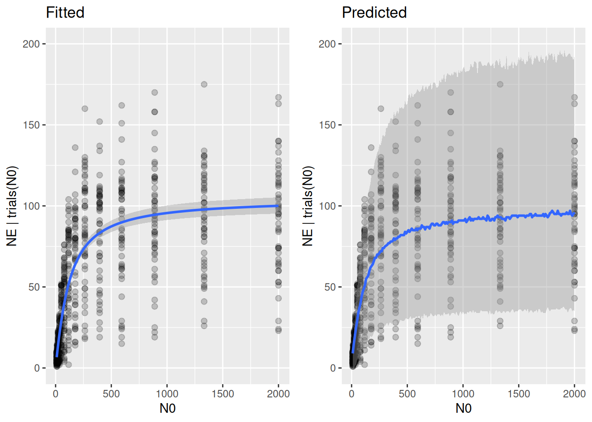
Posterior predictions reflect the range of the data much better now.
LOO(fit.1, fit.2) model elpd_diff se_diff p_worse diag_diff diag_elpd
fit.2 0.0 0.0 NA
fit.1 -4161.1 259.1 1.00 Model comparison indicates a strong support of the Beta-Binomial model. Here, even without access to the variables causing the strong variation in the data (predator ID and/or predator body size), the Beta-Binomial estimates population-level parameters with a more appropriate uncertainty than the Binomial model.
Non-integer response
We use a dataset from tutorial 3 where prey were not replaced, here a subset of the data from a different temperature level. Although observations were integer numbers of eaten prey, for purely didactic reasons we pretend that observations were non-integer densities, which makes the Binomial distribution unfeasible.
df = df_Sentis_et_al_2017_GLOBAL_CHANGE_BIOLOGY
df = subset(df_Sentis_et_al_2017_GLOBAL_CHANGE_BIOLOGY, ID=="Figure 1d")
ggplot(aes(N0,NE), data=df) +
geom_jitter(alpha = 0.5, width=0.5, height=0, size=2) +
coord_cartesian(xlim=c(0,NA), ylim=c(0,NA))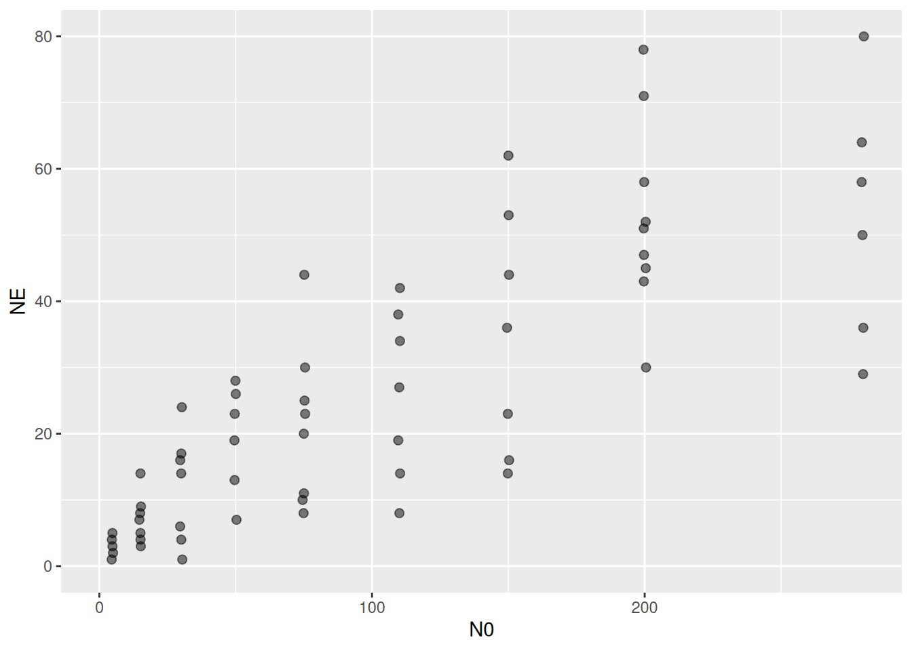
Number of eaten prey \(N_E\) is still bounded between \(0\) and \(N_0\). The Beta distribution can be used for modelling responses with an upper and lower boundary, but it requires that \(0<N_E<N_0\), or equivalently \(0<\frac{N_E}{N_0}<1\) (boundaries are not met). Unfortunately, this data contains 1 observation with \(N_E=N_0\) (all prey were eaten). Here we can either omit this datapoint or replace it with a maximum value smaller than \(N_0\) to use the Beta distribution (below), or use a distribution without upper boundary such as Gamma or Lognormal.
min(df$NE/df$N0) # NE==0 ?[1] 0.03333333max(df$NE/df$N0) # NE==N0 ?[1] 1sum(df$N0==df$NE) # how many datapoints?[1] 1Gamma distribution
We can straightforward replace the Binomial with the Gamma distribution. Note that the prediction model ~Type2H_dyn() is not divided by N0.
FR.formula = bf( NE ~ Type2H_dyn(N0,1.0,1.0,a,h),
a+h ~ 1,
nl = TRUE)
FR.priors = c(prior(exponential(1.0), nlpar="a", lb=0),
prior(exponential(1.0), nlpar="h", lb=0)
)
fit.3 = brm(FR.formula,
family = Gamma(link="identity"),
prior = FR.priors,
data = df,
cores = 4,
stanvars = stanvar(scode=Type2H_dyn_code, block="functions")
)
expose_functions(fit.3, vectorize=TRUE)
summary(fit.3) Family: gamma
Links: mu = identity
Formula: NE ~ Type2H_dyn(N0, 1, 1, a, h)
a ~ 1
h ~ 1
Data: df (Number of observations: 62)
Draws: 4 chains, each with iter = 2000; warmup = 1000; thin = 1;
total post-warmup draws = 4000
Regression Coefficients:
Estimate Est.Error l-95% CI u-95% CI Rhat Bulk_ESS Tail_ESS
a_Intercept 0.69 0.14 0.49 1.00 1.00 1993 2200
h_Intercept 0.01 0.00 0.01 0.02 1.00 2130 1617
Further Distributional Parameters:
Estimate Est.Error l-95% CI u-95% CI Rhat Bulk_ESS Tail_ESS
shape 3.45 0.61 2.40 4.74 1.00 2132 2211
Draws were sampled using sampling(NUTS). For each parameter, Bulk_ESS
and Tail_ESS are effective sample size measures, and Rhat is the potential
scale reduction factor on split chains (at convergence, Rhat = 1).The Gamma distribution includes a parameter shape, which defines both the variance and skewness of the distribution for a given mean (both decline with an increase in shape).
pp_check(fit.3, ndraws=100)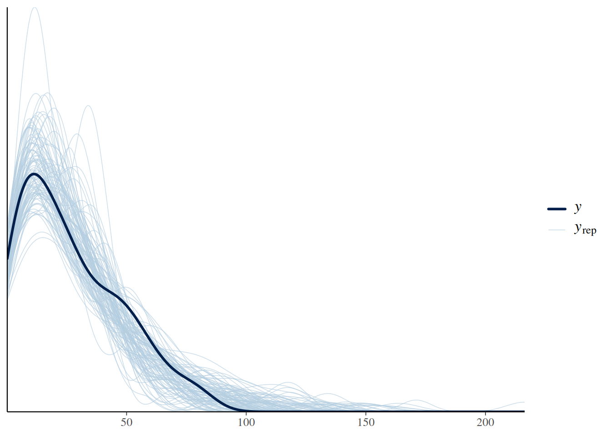
p1 = plot(conditional_effects(fit.3),
points = TRUE,
point_args = list(alpha=0.5, size=2),
plot = FALSE)
p1 = p1[[1]] + coord_cartesian(ylim=c(0,110)) + ggtitle("Fitted")
p2 = plot(conditional_effects(fit.3, method = "posterior_predict"),
points = TRUE,
point_args = list(alpha=0.5, size=2),
plot = FALSE)
p2 = p2[[1]] +
coord_cartesian(ylim=c(0,110)) + ggtitle("Predicted")
plot_grid(p1, p2, ncol=2)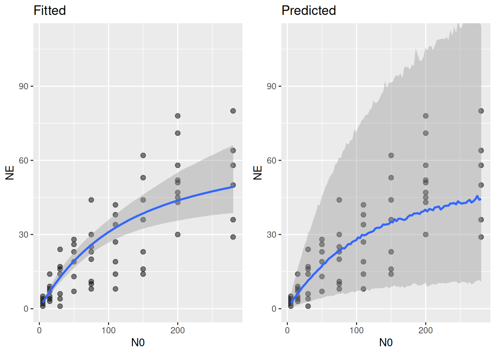
It looks like the Gamma distribution overpredicts the range of observed data, especially the upper quantiles are systematically too large. This is probably because the Gamma does not have an upper bound. Therefore, we will now use a Beta distribution that respects the upper limits as well.
Beta distribution
We already noticed that for one observation we have \(N_E=N_0\), which is unfeasible for the Beta distribution. We will fit \(N_E/N_0\sim p\), with data \(0<N_E/N_0<1\). We could either remove this observation (and loose the information that this feeding trial experienced strong predation), or replace the observed \(N_E/N_0\) by a value close to, but smaller than 1. Although tempting, it is generally not recommended to use an arbitrarily close value like \(N_E/N_0=0.999\), or similar. Values close to the mathematical boundary of a continuous distribution can introduce a strong bias. Alternatively, we replace it by the next practically observable unit, which here was \((N_E-1)/N_0\).
ID = which(df$N0==df$NE)
df.trunc = df
df.trunc$NE[ID] = df.trunc$N0[ID]-1The Beta distribution includes a precision parameter \(\varphi\), which has to scale with \(N_0\) for the same reasons as discussed in the Beta-Binomial model above (see Appendix): phi~0+N0. The default link functions of family=Beta() have to be overwritten by identity, and we are good to go.
FR.formula = bf( NE/N0 ~ Type2H_dyn(N0,1.0,1.0,a,h)/N0,
phi ~ 0+N0,
a+h ~ 1,
nl = TRUE)
FR.priors = c(prior(exponential(1.0), nlpar="a", lb=0),
prior(exponential(1.0), nlpar="h", lb=0),
prior(exponential(0.01), dpar="phi", lb=0)
)
fit.4 = brm(FR.formula,
family = Beta(link="identity", link_phi="identity"),
prior = FR.priors,
data = df.trunc,
cores = 4,
stanvars = stanvar(scode=Type2H_dyn_code, block="functions")
)
expose_functions(fit.4, vectorize=TRUE)
summary(fit.4) Family: beta
Links: mu = identity; phi = identity
Formula: NE/N0 ~ Type2H_dyn(N0, 1, 1, a, h)/N0
phi ~ 0 + N0
a ~ 1
h ~ 1
Data: df.trunc (Number of observations: 62)
Draws: 4 chains, each with iter = 2000; warmup = 1000; thin = 1;
total post-warmup draws = 4000
Regression Coefficients:
Estimate Est.Error l-95% CI u-95% CI Rhat Bulk_ESS Tail_ESS
a_Intercept 0.56 0.10 0.39 0.80 1.00 1607 1451
h_Intercept 0.01 0.00 0.01 0.02 1.00 1569 1104
phi_N0 0.13 0.02 0.09 0.18 1.00 2390 2450
Draws were sampled using sampling(NUTS). For each parameter, Bulk_ESS
and Tail_ESS are effective sample size measures, and Rhat is the potential
scale reduction factor on split chains (at convergence, Rhat = 1).Note how attack rate is lower as in the Gamma model above.
pp_check(fit.4, ndraws=100)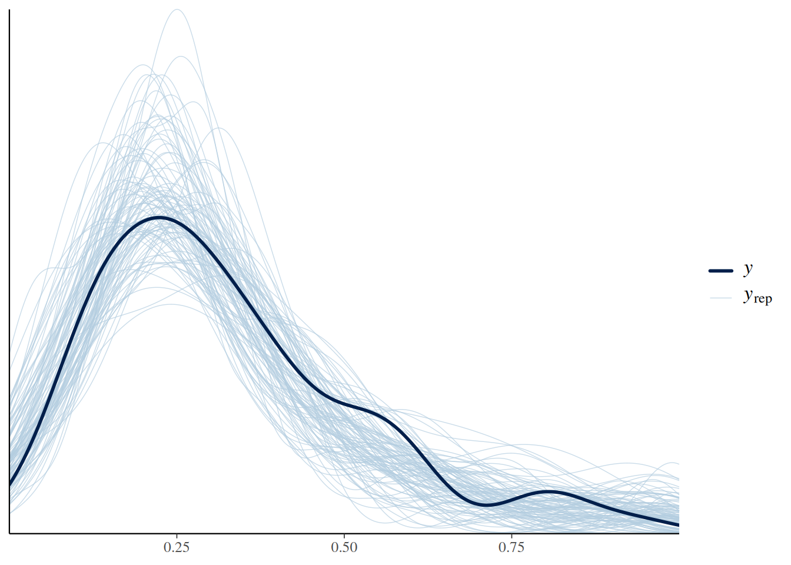
p1 = plot(conditional_effects(fit.4),
points = TRUE,
point_args = list(alpha=0.5, size=2),
plot = FALSE)
p1 = p1[[1]] + coord_cartesian(ylim=c(0,1)) + ggtitle("Fitted")
p2 = plot(conditional_effects(fit.4, method = "posterior_predict"),
points = TRUE,
point_args = list(alpha=0.5, size=2),
plot = FALSE)
p2 = p2[[1]] + coord_cartesian(ylim=c(0,1)) + ggtitle("Predicted")
plot_grid(p1, p2, ncol=2)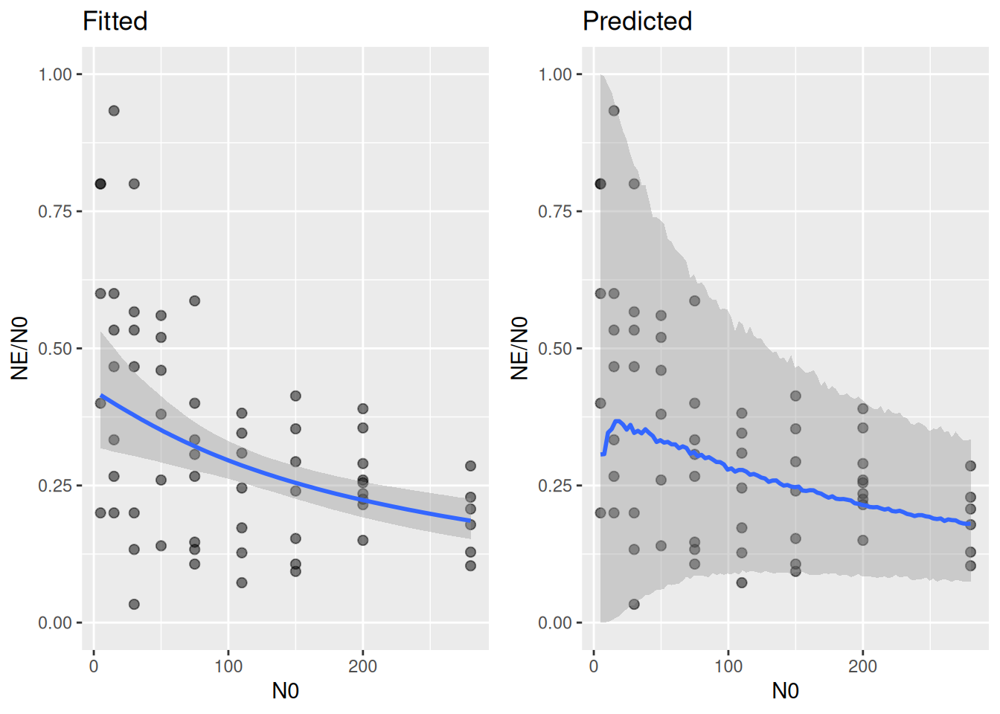
The conditional effects plots looks different now. It does not show predictions for \(N_E\), but predictions for \(N_E/N_0\). The Beta distribution, along with the appropriate scaling of the precision parameter (precision increases with \(N_0\)), accurately describes the distribution of the data.
Unfortunately, conditional_effects() does not transform predictions back to the original \(N_E\)-scale. We have to do this manually for producing the fitted and the predictive distributions, by using fitted() and predict(), respectively, and multiply by N0.
# x-axis
df.new = data.frame(N0=1:max(df.trunc$N0))
# fitted = regression curve
df.fit = fitted(fit.4, newdata=df.new)
head(df.fit) Estimate Est.Error Q2.5 Q97.5
[1,] 0.4240699 0.05728175 0.3194403 0.5452602
[2,] 0.4223797 0.05659735 0.3190061 0.5418470
[3,] 0.4206979 0.05591779 0.3185728 0.5384516
[4,] 0.4190245 0.05524317 0.3181404 0.5350743
[5,] 0.4173594 0.05457360 0.3177108 0.5317158
[6,] 0.4157029 0.05390917 0.3172330 0.5285546df.fit = df.fit*df.new$N0
df.fit = cbind(df.fit, df.new)
head(df.fit) Estimate Est.Error Q2.5 Q97.5 N0
1 0.4240699 0.05728175 0.3194403 0.5452602 1
2 0.8447594 0.11319471 0.6380121 1.0836939 2
3 1.2620937 0.16775337 0.9557183 1.6153547 3
4 1.6760979 0.22097269 1.2725615 2.1402974 4
5 2.0867972 0.27286799 1.5885541 2.6585788 5
6 2.4942172 0.32345503 1.9033983 3.1713279 6# predicted = regression curve and residual distribution
df.pred = predict(fit.4, newdata=df.new)
head(df.pred) Estimate Est.Error Q2.5 Q97.5
[1,] 0.4350802 0.4660713 5.339900e-27 1.0000000
[2,] 0.4245423 0.4398271 6.635105e-14 1.0000000
[3,] 0.4217352 0.4229229 2.120283e-09 0.9999976
[4,] 0.4277862 0.4080004 9.026684e-08 0.9999785
[5,] 0.4207458 0.3858262 3.563788e-06 0.9995788
[6,] 0.4075910 0.3711338 1.893680e-05 0.9987244df.pred = df.pred*df.new$N0
df.pred = cbind(df.pred, df.new)
head(df.pred) Estimate Est.Error Q2.5 Q97.5 N0
1 0.4350802 0.4660713 5.339900e-27 1.000000 1
2 0.8490845 0.8796542 1.327021e-13 2.000000 2
3 1.2652056 1.2687686 6.360848e-09 2.999993 3
4 1.7111446 1.6320014 3.610674e-07 3.999914 4
5 2.1037291 1.9291312 1.781894e-05 4.997894 5
6 2.4455461 2.2268029 1.136208e-04 5.992347 6p1 = ggplot(df.trunc, aes(N0, NE)) +
geom_point(alpha=0.6, size=2) +
geom_ribbon(aes(x = N0, ymin=Q2.5, ymax=Q97.5),
alpha = 0.2,
inherit.aes = FALSE,
data = df.fit) +
geom_line(aes(x = N0, y = Estimate),
linewidth = 1,
col = "blue",
inherit.aes = FALSE,
data = df.fit) +
coord_cartesian(ylim=c(0,110)) +
ggtitle("Fitted")
p2 = ggplot(df.trunc, aes(N0, NE)) +
geom_point(alpha=0.6, size=2) +
geom_ribbon(aes(x = N0, ymin=Q2.5, ymax=Q97.5),
alpha = 0.2,
inherit.aes = FALSE,
data = df.pred) +
geom_line(aes(x = N0, y = Estimate),
linewidth = 1,
col = "blue",
inherit.aes = FALSE,
data = df.pred) +
coord_cartesian(ylim=c(0,110)) +
ggtitle("Predicted")
plot_grid(p1, p2, ncol=2)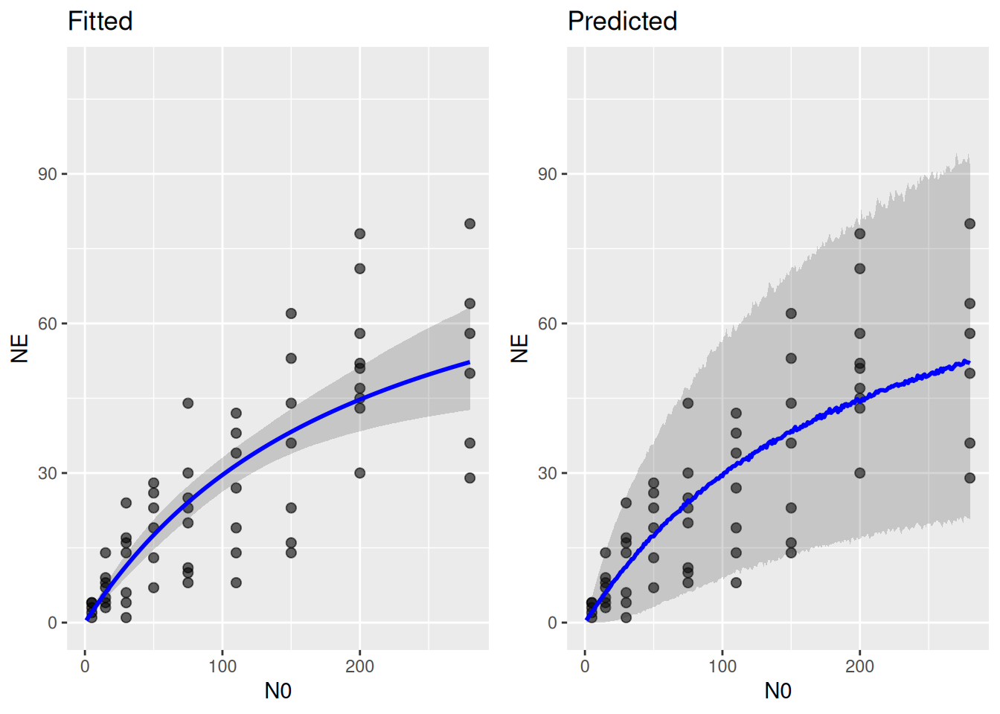
On this scale, too, the Beta distribution describes the range of observed data better than the Gamma.
Appendix
The Beta-Binomial distribution features a larger variance than the Binomial distribution by assuming the predicted probability of being eaten \(p=N_E/N_0\) is not fixed, but itself features some variation expressed by a Beta distribution with precision \(\varphi\) (overdispersion is \(\theta=1/\varphi\)).
In the Binomial distribution, the mean is \[\mu=N_E=pN_0\] where \(p=N_E/N_0\) is the average probability of a prey individual being eaten. For large \(N_0\), feeding is limited by handling time \(h=1/f_\max\), and \(N_E\) asymptotically approaches \(f_\max\). Here, average probability \(p\approx f_\max/N_0\) tends to zero for increasing \(N_0\). For large \(N_0\), the variance \[\begin{align} \sigma^2 &= N_0p(1-p) \\ & = N_0 \frac{N_E}{N_0}\left(1-\frac{N_E}{N_0}\right) \\ & \approx N_0 \frac{f_\max}{N_0}\left(1-\frac{f_\max}{N_0}\right) \\ &= f_\max\left(1-\frac{f_\max}{N_0}\right) \end{align} \] tends to \(f_\max\) (a constant).
Following Fenlon & Faddy (2006), which describe the Beta-Binomial distribution for functional responses, the mean
\[\mu=N_E=pN_0\] is the same as above. The variance \[\sigma^2 = N_0p(1-p)\left(1+\frac{\theta}{1+\theta}(N_0-1)\right) \] however, now includes a scaling factor depending on overdispersion \(\theta=1/\varphi\) and also \(N_0\). This \(N_0\)-dependence would let the variance increase with \(N_0\) indefinitely, even if the first part of the equation is limited as shown above. There is no reason to assume unlimited variance for handling-time limited feeding, and we can keep the variance bounded by replacing \(\theta\) by \(\theta/N_0\)
\[\begin{align} \sigma^2 & = N_0p(1-p)\left(1+\frac{\theta/N_0}{1+\theta/N_0}(N_0-1)\right) \\ &= N_0p(1-p)\left(1+\frac{\theta}{1+\theta/N_0}\frac{N_0-1}{N_0}\right) \end{align}\] For large \(N_0\), the first part tends to \(f_\max\) as shown above, and the second part tends to \((1+\theta)\), so the variance \[\sigma^2 \approx f_\max(1+\theta)\] is kept bounded for large \(N_0\), too. This requires replacing the precision parameter \(\varphi\) by \(\varphi N_0\) (same as replacing \(\theta\) by \(\theta/N_0\)).